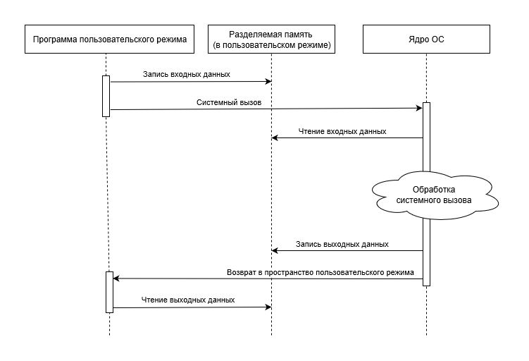
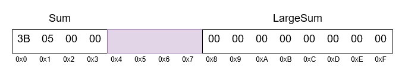
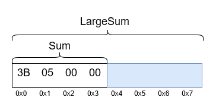
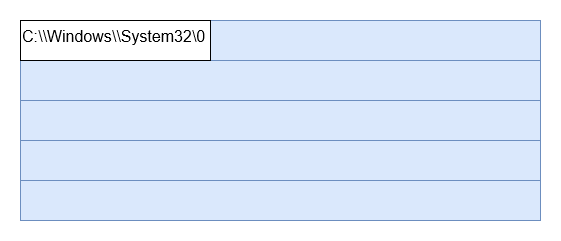

Это копия моего перевода, опубликованного на habr: Раскрытие памяти (Memory Disclosure) ядра в современных ОС.
Disclaimer
Эта публикация является переводом части документа "Detecting Kernel Memory Disclosure with x86 Emulation and Taint Tracking" (Статья Project Zero) от Mateusz Jurczyk.
В переведенной части документа:
- специфика языка программирования C (в рамках проблемы раскрытия памяти)
- специфика работы ядер ОС Windows и Linux (в рамках проблемы раскрытия памяти)
- значимость раскрытия памяти ядра и влияние на безопасность ОС
- существующие методы и техники обнаружения и противодействия раскрытия памяти ядра
Хотя в документе пристально рассматриваются механизмы общения привилегированного ядра ОС с пользовательскими приложениями, суть проблемы можно обощить для любой передачи данных между различными доменами безопасности: гипервизор — гостевая машина, привилегированный системный сервис (демон) — GUI приложение, сетевые клиент — сервер и т.д.
Введение
Одной из задач современных операционных систем является обеспечение разделения привилегий между пользовательскими приложениями и ядром ОС. Во-первых к этому относится то, что влияние каждой программы на среду выполнения должно быть ограничено определенной политикой безопасности, а во вторых то, что программы могут получать доступ только к той информации, которую им разрешено читать. Второе сложно обеспечить, учитывая свойства языка C (основного языка программирования, используемого при разработке ядра), которые делают чрезвычайно сложным безопасную передачу данных между различными доменами безопасности.
Современные операционные системы, работающие на платформах x86/x86-64, многопоточны и используют клиент-серверную модель, в которой приложения пользовательского режима (клиенты) выполняются независимо друг от друга и вызывают ядро ОС (сервер) при намерении работать с ресурсом, управляемым системой. Механизм, используемый кодом режима пользователя (ring 3) для вызова заранее определенного набора функций ядра ОС (ring 0), называется системными вызовами (system calls) или (коротко) syscalls. Типичный системный вызов показан на рисунке 1:

Рисунок 1: Жизненный цикл системного вызова.
Очень важно избегать непреднамеренной утечки содержимого памяти ядра при взаимодействии с программами пользовательского режима. Существует значительный риск раскрытия чувствительных данных ядра ОС. Данные могут неявно передаваться в выходных параметрах безопасных (с остальных точек зрения) системных вызовов.
Раскрытие привилегированной системной памяти происходит, когда ядро ОС возвращает регион памяти, больший (избыточного размера), чем необходимо для хранения соответствующей информации (содержащейся внутри). Часто избыточные байты содержат данные, которые были заполнены в другом контексте, а затем память не была предварительно инициализирована, что предотвратило бы распространение информации в новые структуры данных.
Специфика языка программирования C
В этом разделе мы рассмотрим несколько аспектов языка C, которые наиболее важны для проблемы раскрытия памяти.
Неопределенное состояние неинициализированных переменных
Отдельные переменные простых типов (таких, как char или int), а также члены структур данных (массивы, структуры и объединения) остаются в неопределенном состоянии до первой инициализации (вне зависимости от размещения их на стеке или в куче). Соответствующие цитаты из спецификации C11 (ISO/IEC 9899:201x Committee Draft N1570, April 2011):
6.7.9 Initialization
...
10 If an object that has automatic storage duration is not initialized explicitly, its value is indeterminate.
7.22.3.4 The malloc function
…
2 The malloc function allocates space for an object whose size is specified by size and whose value is indeterminate.
7.22.3.5 The realloc function
…
2 The realloc function deallocates the old object pointed to by ptr and returns a pointer to a new object that has the size specified by size. The contents of the new object shall be the same as that of the old object prior to deallocation, up to the lesser of the new and old sizes. Any bytes in the new object beyond the size of the old object have indeterminate values.
Наиболее применима к системному коду та часть, что относится к объектам, расположенным на стеке, поскольку ядро ОС обычно имеет интерфейсы динамического выделения с их собственной семантикой (не обязательно совместимые со стандартной библиотекой C, как будет описано далее).
Насколько нам известно, ни один из трех самых популярных компиляторов C для Windows и Linux (Microsoft C/C++ Compiler, gcc, LLVM) не создает код, который предварительно инициализирует неинициализированные программистом переменные на стеке в режиме Release-сборки (или ее эквивалента). Существуют опции компилятора, позволяющие помечать фреймы стека специальными байтами - маркерами (/RTCs в Microsoft Visual Studio, например) но они не используются в Release-сборках по соображениям производительности. В результате неинициализированные переменные на стеке наследуют старые значения соответствующих областей памяти.
Рассмотрим пример стандартной реализации вымышленного системного вызова Windows, который умножает входное целое на два и возвращает результат умножения (листинг 1). Очевидно, что в частном случае (InputValue == 0) переменная OutputValue остается неинициализированной и копируется обратно клиенту. Такая ошибка позволяет раскрывать четыре байта памяти стека ядра при каждом вызове.
NTSTATUS NTAPI NtMultiplyByTwo(DWORD InputValue, LPDWORD OutputPointer) {
DWORD OutputValue;
if (InputValue != 0) {
OutputValue = InputValue * 2;
}
*OutputPointer = OutputValue;
return STATUS_SUCCESS;
}
Листинг 1: Раскрытие памяти через неинициализированную локальную переменную.
Утечки через неинициализированную локальную переменную на практике не очень распространены: с одной стороны современные компиляторы часто обнаруживают и предупреждают о таких проблемах, с другой стороны подобные утечки являются функциональными ошибками, которые могут быть обнаружены во время разработки или тестирования. Однако второй пример (в листинге 2) показывает, что утечка может также происходить через поле структуры.
В этом случае зарезервированное поле структуры никогда явно не используется в коде, но все же копируется обратно в пользовательский режим и, следовательно, также раскрывает четыре байта памяти ядра вызывающему коду. В этом примере отчетливо видно, что инициализация каждого поля каждой структуры, возвращаемой клиенту, для всех веток исполнения кода является непростой задачей. Во многих случаях принудительная инициализация выглядит нелогично, особенно если это поле не играет никакой практической роли. Но именно тот факт, что не проинициализированная переменная (или поле структуры) на стеке (или в куче) принимает содержимое данных, ранее сохраненных в этой областях памяти (в контексте другой операции), лежит в основе проблемы раскрытия памяти ядра.
typedef struct _SYSCALL_OUTPUT {
DWORD Sum;
DWORD Product;
DWORD Reserved;
} SYSCALL_OUTPUT, *PSYSCALL_OUTPUT;
NTSTATUS NTAPI NtArithOperations(
DWORD InputValue,
PSYSCALL_OUTPUT OutputPointer
) {
SYSCALL_OUTPUT OutputStruct;
OutputStruct.Sum = InputValue + 2;
OutputStruct.Product = InputValue * 2;
RtlCopyMemory(OutputPointer, &OutputStruct, sizeof(SYSCALL_OUTPUT));
return STATUS_SUCCESS;
}
Листинг 2: Раскрытие памяти через зарезервированное поле структуры.
Выравнивание структур и заполняющие (padding) байты
Инициализация всех полей выходной структуры является хорошим началом, чтобы избежать раскрытия памяти. Но и этого не достаточно, что бы гарантировать, что в низкоуровневом представлении отсутствуют неинициализированные байты. Давайте снова обратимся к спецификации C11:
6.5.3.4 The sizeof and Alignof operators
...
4 [...] When applied to an operand that has structure or union type, the result is the total number of bytes in such an object, including internal and trailing padding.
6.2.8 Alignment of objects
1 Complete object types have alignment requirements which place restrictions on the addresses at which objects of that type may be allocated. An alignment is an implementation-defined integer value representing the number of bytes between successive addresses at which a given object can be allocated. [...]
6.7.2.1 Structure and union specifiers
…
17 There may be unnamed padding at the end of a structure or union
То есть компиляторы языка С для x86(-64) архитектур применяют естественное выравнивание полей структур (имеющих примитивный тип): каждое такое поле выравнивается на N байт, где N - размер поля. Кроме того, целые структуры и объединения также выровнены, когда они объявляются в массиве, при этом выполняется требование к выравниванию вложенных полей. Чтобы обеспечить выравнивание, неявные байты заполнения (padding) вставляются в структуры там, где это необходимо. Хотя они не доступны напрямую в исходном коде, эти байты также наследуют старые значения из областей памяти и могут передавать информацию в пользовательский режим.
В примере из листинга 3 структура SYSCALL_OUTPUT возвращается обратно вызывающему коду. Она содержит 4-х и 8-ми байтовые поля, разделенные 4-мя байтами заполнения (padding), необходимыми для того, что бы адрес поля LargeSum стал кратен 8-ми. Несмотря на то, что оба поля правильно инициализированы, байты заполнения (padding) не заданы явно, что опять-таки приводит к раскрытию памяти стека ядра. Специфика расположение структуры в памяти показана на рисунке 2.
typedef struct _SYSCALL_OUTPUT {
DWORD Sum;
QWORD LargeSum;
} SYSCALL_OUTPUT, *PSYSCALL_OUTPUT;
NTSTATUS NTAPI NtSmallSum(
DWORD InputValue,
PSYSCALL_OUTPUT OutputPointer
) {
SYSCALL_OUTPUT OutputStruct;
OutputStruct.Sum = InputValue + 2;
OutputStruct.LargeSum = 0;
RtlCopyMemory(OutputPointer, &OutputStruct, sizeof(SYSCALL_OUTPUT));
return STATUS_SUCCESS;
}
Листинг 3: Раскрытие памяти через выравнивание структуры.

Рисунок 2: Представление структуры в памяти с учетом выравнивания.
Утечки через выравнивания относительно распространены, так как достаточно много выходных параметров системных вызовов представлены структурами. Проблема особенно остро встает для 64-х битных платформ, где размер указателей, size_t и подобных типов увеличивается с 4 до 8 байт, что приводит к появлению заполнения (padding), необходимого для выравнивания полей таких структур.
Поскольку байты заполнения (padding) не могут быть адресованы в исходном коде, необходимо использовать memset или аналогичную функцию для сброса всей области памяти структуры до инициализации любого из ее полей и копирования ее в пользовательский режим, например:
memset(&OutputStruct, 0, sizeof(OutputStruct));
Тем не менее, Seacord R. C. в своей книге "The CERT C Coding Standard, Second Edition: 98 Rules for Developing Safe, Reliable, and Secure Systems. Addison-Wesley Professional" 2014 утверждает, что это не идеальное решение, поскольку байты заполнения (padding) могут по-прежнему быть сбиты после вызова memset, например, как побочный эффект операций со смежными полями. Озабоченность может быть оправдана следующим утверждением в спецификации С:
6.2.6 Representations of types
6.2.6.1 General
...
6 When a value is stored in an object of structure or union type, including in a member object, the bytes of the object representation that correspond to any padding bytes take unspecified values. [...]
Однако на практике ни один из компиляторов C, которые мы тестировали, не читал и не писал за пределами областей памяти явно объявленных полей. Похоже, что это мнение разделяют разработчики операционных системы, которые используют memset.
Объединения (Unions) и поля разного размера
Объединения - еще одна сложная конструкция языка C в контексте общения с менее привилегированным вызывающим кодом. Рассмотрим как спецификация C11 описывает представление объединений в памяти:
6.2.5 Types
...
20 Any number of derived types can be constructed from the object and function types, as follows: [...] A union type describes an overlapping nonempty set of member objects, each of which has an optionally specified name and possibly distinct type.
6.7.2.1 Structure and union specifiers
...
6 As discussed in 6.2.5, a structure is a type consisting of a sequence of members, whose storage is allocated in an ordered sequence, and a union is a type consisting of a sequence of members whose storage overlap.
...
16 The size of a union is sufficient to contain the largest of its members. The value of at most one of the members can be stored in a union object at any time.
Проблема состоит в том, что если объединение состоит из нескольких полей разного размера и явно инициализировано только одно полей меньшего размера, то оставшиеся байты, выделенные для размещения больших полей, остаются неинициализированными. Давайте рассмотрим пример гипотетического обработчика системных вызовов, представленный в листинге 4, вместе с распределением памяти объединения SYSCALL_OUTPUT, показанным на рисунке 3.
typedef union _SYSCALL_OUTPUT {
DWORD Sum;
QWORD LargeSum;
} SYSCALL_OUTPUT, *PSYSCALL_OUTPUT;
NTSTATUS NTAPI NtSmallSum(
DWORD InputValue,
PSYSCALL_OUTPUT OutputPointer
) {
SYSCALL_OUTPUT OutputStruct;
OutputStruct.Sum = InputValue + 2;
RtlCopyMemory(OutputPointer, &OutputStruct, sizeof(SYSCALL_OUTPUT));
return STATUS_SUCCESS;
}
Листинг 4: Раскрытие памяти через частичную инициализацию объединения.

Рисунок 3: Представление объединения в памяти с учетом выравнивания.
Получается, что общий размер объединения SYSCALL_OUTPUT составляет 8 байт (из-за размера большего поля LargeSum). Тем не менее, функция задает только значение меньшего поля, оставляя 4 конечных байта неинициализированными, что впоследствии и приводит к утечке их клиентскому приложению.
Безопасная реализация должна устанавливать только поле Sum в пользовательском адресном пространстве, а не копировать весь объект с потенциально неиспользуемыми областями памяти. Еще один рабочий вариант исправления - вызов функции memset для обнуления копии объединения в памяти ядра до установки любого из его полей и передачи его обратно в пользовательский режим.
Небезопасный sizeof
Как показано в двух предыдущих подразделах, использование оператора sizeof может напрямую или косвенно способствовать раскрытию памяти ядра, провоцируя копирование большего количества данных, чем ранее инициализировалось.
В языке C отсутствует аппарат, необходимый для безопасного переноса данных из ядра в пользовательское пространство - или, в более общем плане, между любыми разными контекстами безопасности. Язык не содержит метаданных времени исполнения, которые могут явно указать, какие байты были установлены в каждой структуре данных, которая используется для взаимодействия с ядром ОС. В результате ответственность ложиться на программиста, который должен сам определять какие части каждого объекта должны быть переданы вызывающему коду. Если делать правильно, то нужно написать отдельную функцию безопасного копирования для каждой структуры выходных данных, используемых в системных вызовах. Что в свою очередь приведет к раздуванию размера кода, ухудшению его читаемости и в целом будет утомительной и трудоемкой задачей.
С другой стороны, удобно и просто копировать всю область памяти ядра с помощью одного вызова memcpy и аргумента sizeof, и пусть клиент определит, какие части выходных данных будут использоваться. Получается, что это этот подход используется сегодня в Windows и Linux. А когда обнаруживается конкретный случай утечки информации, патч с вызовом memset незамедлительно предоставляется и распространяется производителем ОС. К сожалению, это не решает проблему в общем случае.
Специфика конкретных ОС
Существуют определенные решения для проектирования ядра, методы программирования и шаблоны кода, которые влияют на то, насколько склонна операционная система к уязвимостям на раскрытие памяти. Именно они рассматриваются в следующих подразделах.
Переиспользование динамической памяти
Текущие распределители (allocator) динамической памяти (как в режиме пользователя, так и в режиме ядра) сильно оптимизированы, так как их производительность оказывает значительное влияние на производительность всей системы. Одной из наиболее важных оптимизаций является повторное использование памяти: при освобождении соответствующая память редко полностью отбрасывается, вместо этого она сохраняется в списке регионов, готовых к возврату при следующем запросе на выделение. Чтобы сэкономить циклы ЦП, области памяти по умолчанию не очищаются между освобождением и новым выделением. В результате этого получается, что две несвязанные части ядра работают с одним и тем же диапазоном памяти в течении короткого времени. Это означает, что утечка содержимого динамической памяти ядра позволяет раскрывать данные различных компонентов ОС.
В следующих параграфах мы приводим краткий обзор распределителей памяти (allocators), используемых в ядрах Windows и Linux, и их наиболее примечательных качеств.
Windows
Ключевой функцией диспетчера пула ядра Windows является ExAllocatePoolWithTag, которая может вызываться напрямую или через одну из доступных оболочек: ExAllocatePool{, Ex, WithQuotaTag, WithTagPriority}. Ни одна из этих функций не сбрасывает содержимое возвращаемой памяти, ни по умолчанию, ни через любые входные флаги. Напротив, все они имеют следующее предупреждение в своих соответствующих документах документации MSDN:
Вызывающий код может выбрать один из шести основных типов пулов: NonPagedPool, NonPagedPoolNx, NonPagedPoolSession, NonPagedPoolSessionNx, PagedPool и PagedPoolSession. Каждый из них имеет отдельный регион в виртуальном адресном пространстве, и поэтому выделенные области памяти могут быть повторно использованы только в пределах этого же типа пула. Частота повторного использования кусков памяти очень высока, а обнуленные области обычно возвращаются только в том случае, если подходящая запись не найдена в lookaside-списках, или запрос настолько велик, что требуются новые страницы памяти. Другими словами, в настоящее время практически нет факторов, препятствующих раскрытию памяти пула в Windows, и почти каждая такая ошибка может быть использована для утечки конфиденциальных данных из разных частей ядра.
Linux
Ядро Linux имеет три основных интерфейса для динамического выделения памяти:
- kmalloc - общая функция, используемая для выделения блоков памяти произвольного размера (непрерывных как в виртуальном, так и в физическом адресном пространстве), использует распределение памяти slab.
- kmem_cache_create и kmem_cache_alloc - специализированный механизм выделения объектов фиксированного размера (структур, например), так же использует распределение памяти slab.
- vmalloc - редко используемая функция выделения, возвращающая регионы, непрерывность которых не гарантирована на уровне физической памяти.
Эти функции (сами по себе) не гарантируют, что выделенные регионы не будут содержать старые (потенциально конфиденциальные) данные, что делает возможным раскрытие памяти кучи ядра. Однако существует несколько способов, используя которые вызывающий код может запрашивать обнуленную память:
- Функция kmalloc имеет аналог kzalloc, который гарантирует, что возвращенная память очищена.
- Дополнительный флаг __GFP_ZERO может быть передан в kmalloc, kmem_cache_alloc и некоторые другие функции для достижения того же результата.
- kmem_cache_create принимает указатель на необязательную функцию-конструктор, вызываемую для предварительной инициализации каждого объекта, прежде чем вернуть его вызывающему коду. Конструктор может быть реализован как обертка вокруг memset для обнуления заданной области памяти.
Мы видим в наличии этих опций выгодные условия для безопасности ядра, поскольку они побуждают разработчиков принимать осознанные решения и позволяют им просто работать с существующими функциями распределения памяти вместо того, чтобы добавлять дополнительные вызовы memset после каждого выделения динамической памяти.
Массивы фиксированного размера
Доступ к некоторому количеству ресурсов ОС можно получить по их тестовым именам. Разнообразие именованных ресурсов в Windows очень велико, например: файлы и директории, ключи и значения ключей реестра, окна, шрифты и многое другое. Для некоторых из них длина имени ограничена и выражается константой, такой как MAX_PATH (260) или LF_FACESIZE (32). В таких случаях разработчики ядра часто упрощают код, объявляя буферы максимально допустимого размера и копируя их целиком (например, используя ключевое слово sizeof) вместо того, чтобы работать только с соответствующей частью строки. Это особенно удобно, если строки являются членами более крупных структур. Такие объекты можно свободно перемещать в памяти, не беспокоясь об управлении указателями на динамическую память.
Как и следовало ожидать, большие буферы редко используются полностью, а оставшееся место для хранения часто не сбрасывается. Это может привести к особенно сильным утечкам длинных непрерывных областей памяти ядра. В примере, показанном в листинге 5, системный вызов использует функцию RtlGetSystemPath для загрузки системного пути в локальный буфер, и если вызов завершается успешно, все 260 байтов передаются вызывающему, независимо от фактической длины строки.
NTSTATUS NTAPI NtGetSystemPath(PCHAR OutputPath) {
CHAR SystemPath[MAX_PATH];
NTSTATUS Status;
Status = RtlGetSystemPath(SystemPath, sizeof(SystemPath));
if (NT_SUCCESS(Status)) {
RtlCopyMemory(OutputPath, SystemPath, sizeof(SystemPath));
}
return Status;
}
Листинг 5: Раскрытие памяти через частичную инициализацию буфера строки.
Регион памяти, скопированный обратно в пользовательское пространство в этом примере, показан на рисунке 4.

Рисунок 4: Память частично инициализированного буфера строки.
Безопасная реализация должна возвращать только запрошенный путь, а не весь буфер, используемый для хранения. Этот пример еще раз демонстрирует, как оценка размера данных оператором sizeof (используемого как параметр для RtlCopyMemory) может быть совершенно неверной по отношению к фактическому количеству данных, которое ядро должно передать в пользовательскую область.
Произвольный размер выходных данных системного вызова
Большинство системных вызовов принимают указатели на выходные данные из пользовательского режима вместе с размером буфера. В большинстве случаев информацию о размере следует использовать только для определения того, достаточен ли предоставленный буфер для получения выходных данных системного вызова. Не следует использовать весь размер предоставленного выходного буфера для задания объема копируемой памяти. Тем не менее, мы наблюдаем случаи, когда ядро будет пытаться использовать каждый байт выходного буфера пользователя, не считая количества фактических данных, которые необходимо скопировать. Пример такого поведения показан в листинге 6.
NTSTATUS NTAPI NtMagicValues(LPDWORD OutputPointer, DWORD OutputLength) {
if (OutputLength < 3 * sizeof(DWORD)) {
return STATUS_BUFFER_TOO_SMALL;
}
LPDWORD KernelBuffer = Allocate(OutputLength);
KernelBuffer[0] = 0xdeadbeef;
KernelBuffer[1] = 0xbadc0ffe;
KernelBuffer[2] = 0xcafed00d;
RtlCopyMemory(OutputPointer, KernelBuffer, OutputLength);
Free(KernelBuffer);
return STATUS_SUCCESS;
}
Листинг 6: Раскрытие памяти через выходной буфер произвольного размера.
Целью системного вызова является предоставление вызывающему коду трех специальных 32-х битных значений, занимающих в общей сложности 12 байт. Хотя проверка правильности размера буфера в самом начале функции верна, использование аргумента OutputLength должно на этом и заканчиваться. Зная, что выходной буфер имеет достаточный размер, чтобы сохранить результат, ядро может выделить 12 байт памяти, заполнить ее и скопировать содержимое обратно в предоставленный буфер пользовательского режима. А вместо этого системный вызов выделяет блок пула (причем с контролируемой пользователем длиной) и копирует выделенную память целиком в пользовательское пространство. Получается, что все байты, кроме первых 12-ти, не инициализируются и ошибочно раскрываются пользователю, как показано на рисунке 5.

Рисунок 5: Память буфера произвольного размера.
Схема, обсуждаемая в этом разделе, особенно характерна для Windows. Подобная ошибка может предоставить злоумышленнику чрезвычайно полезный примитив для раскрытия памяти:
- Оптимизация, часто используемая в системных вызовах Windows, заключается в использовании буферов на основе стека для небольших размеров и выделение памяти из пулов для более крупных. В сочетании с подобной утечкой это может облегчить раскрытие как стека ядра, так и пула с помощью одной уязвимости.
- Возможность контролировать размер раскрываемых данных из пула дает злоумышленнику возможность управлять типом конфиденциальной информации. Это становится возможным, учитывая современные механизмы распределения памяти, имеющие тенденцию к кэшированию областей памяти для последующих запросов выделения памяти с тем же размером буфера. Что дает возможность читать специфические данные, недавно освобожденные другим (в общем случае - не связанным) компонентом ядра.
Таким образом, это один из самых опасных типов раскрытия информации. Безопасная реализация должна отслеживать количество байтов, записанных во временное хранилище ядра, и передавая только этот объем данных клиенту.
Факторы, способствующие появлению ошибок раскрытия памяти
Здесь мы расскажем о том, какие существуют проблемы с выявлением ошибок раскрытия памяти в ходе разработки. Что в течение многих лет способствовало отсутствию признания проблемы, что в свою очередь привело к нагромождению в ядре Windows десятков ошибок раскрытия памяти.
Отсутствие видимых последствий
Как правило, ошибки раскрытия информации более сложны для обнаружения, чем нарушения памяти. Последние обычно проявляются в виде сбоев программного обеспечения, особенно в сочетании со специализированными механизмами: AddressSanitizer, PageHeap или Special Pool. Раскрытие информации, напротив, не вызывает каких-либо наблюдаемых проблем и не может быть легко распознано программными решениями. Конфиденциальность любой информации очень субъективна и требуется оценка человеком, что бы определить легитимность предоставленной информации в контексте безопасности. С другой стороны, когда гигабайты траффика передаются между ядром и пользовательским пространством, из памяти программ в файлы на диск, с одной машины на другую через сеть и между контекстами безопасности, не представляется возможным вручную просмотреть весь этот трафик, что бы найти случаи ошибок раскрытия памяти. В результате многие ошибки могут активно *сливать* данных в течение многих лет, прежде чем они будут замечены (если вообще будут замечены).
Тот факт, что уведомление о подобных утечках не дает ощутимой обратной связи от разработчиков ядра, также означает, что они не учатся на своих ошибках. И что они будут повторять одни и те же небезопасные шаблоны кода в нескольких местах, так как они не знают об этом классе ошибок и не предпринимают действий к предотвращению возникновение подобных проблем.
Утечки, скрытые за системным API
Типичные клиентские приложения реализуют свою функциональность с использованием высокоуровневого системного API, особенно в Windows (Win32/User32 API). API часто отвечает за преобразование входных параметров во внутренние структуры, принятые системными вызовами, и аналогичным образом преобразует выходные данные системных вызовов в формат, понятный вызывающему коду клиентского приложения. В этом случае содержимое памяти, раскрываемое ядром, может быть отброшено системной библиотекой пользовательского режима и, следовательно, никогда не будет передана обратно программе. Это еще больше уменьшает видимость утечек и снижает вероятность их обнаружения при разработке *обычного* программного обеспечения.
Значимость и влияние на безопасность системы
По своей природе, утечки памяти памяти ядра в пользовательское пространство являются сугубо локальными ошибками раскрытия информации. Они не приводят к порче памяти или эксплуатации удаленного исполнения, а злоумышленник уже должен иметь возможность исполнения произвольного кода на целевой машине. Но с другой стороны стоит учитывать, что большинство раскрытий совершаются *молча* и не оставляют никаких следов в системе, что позволяет практически бесконечно эксплуатировать подобные ошибки, пока не будет достигнута цель эксплойта. Серьезность проблемы должна оцениваться в каждом конкретном случае, поскольку она зависит от степени утечки и типа данных, которые могут быть раскрыты.
В общем, класс подобных ошибок кажется вполне полезным, как одно из звеньев в длинной цепочке локального повышения привилегий. В настоящее время основная техника, которая основана на неразглашении данных это KASLR (Kernel Address Space Layout Randomization), а расположение различных объектов в адресном пространстве ядра является одним из самых распространенных типов утечек данных. Реальный пример: эксплойт ядра Windows, обнаруженный в дампе Hacking Team в июле 2015 года (Juan Vazquez. Revisiting an Info Leak) в котором использовалось раскрытие памяти пула для определения (derandomize) базового адреса загрузки драйвера win32k.sys, впоследствии используемого для применения в другой уязвимости. Кстати, этот же дефект был обнаружен в тоже время Matt Tait'ом из Google Project Zero (Kernel-mode ASLR leak via uninitialized memory returned to usermode by NtGdiGetTextMetrics) и исправлен в бюллетене MS15-080 (CVE-2015-2433).
Стеки
Различие между стеком и динамической памятью (пулы/кучи) заключается в том, что в стеках обычно хранятся данные, связанные непосредственно с потоком управления (control flow), такие как: адреса модулей ядра, адреса динамической памяти, и секретные значения, установленные механизмами безопасности, такими как StackGuard на Linux и /GS на Windows. Это значимые фрагменты информации, которые могут быть немедленно применены потенциальным злоумышленником в совокупности с эксплоитами порчи памяти. Тем не менее разнообразие данных на стеке ограничено, что позволяет предположить, что эксплуатация утечки стека не представляет большой ценности в виде автономной уязвимости.
Динамическая память (пулы/кучи)
Динамическая память ядра (пулы/кучи) содержит адреса исполняемых модулей, адреса динамически выделенной памяти, а так же ряд конфиденциальных данных, обрабатываемых различными компонентами системы: дисковыми драйверами, драйверами файловых систем, сетевыми драйверами, драйверами видео и так далее. Утечка этой информации позволяет злоумышленнику эффективно следить за деятельностью привилегированных сервисов и других пользователей системы, потенциально получая содержимое конфиденциальных данных, которые имеют ценность сами по себе. Плюс полученные данные могут использоваться при эксплуатации другой ошибки. В целом, проблема эксплуатируемой утечки конкретных типов данных из ядра (содержимого файлов, сетевого трафика или паролей) остается открытой и, к сожалению, она не исследована в должной мере.
Другие существующие исследования
Microsoft Windows
Обнаружение
До 2015 года в публичных источниках практически не обсуждалась проблема раскрытия памяти в Windows. В июле 2015 года Matt Tait сообщил о проблеме раскрытия неинициализированной памяти пула через системный вызов win32k!NtGdiGetTextMetrics. Использование этой же проблемы было обнаружено в эксплойте ядра Windows из дампа Hacking Team. Насколько нам известно, это было первое публичное доказательств того, что уязвимости этого типа были успешно использованы, как часть цепочки 0-day эксплойта по локальному повышению привилегий в Windows.
Так же в 2015, WanderingGlitch (HP Zero Day Initiative) был упомянут в восьми обнаруженных уязвимостях раскрытия памяти ядра (Acknowledgments – 2015). Некоторые из этих уязвимостей будут позже рассмотрены автором на конференции Ruxcon 2016 (посвящённой информационной безопасности) во время доклада "Leaking Windows Kernel Pointers".
И наконец, в июне 2017 fanxiaocao и pjf из IceSword Lab (Qihoo 360) опубликовали статью "Automatically Discovering Windows Kernel Information Leak Vulnerabilities", где описали свой инструмент, который позволил им обнаружить суммарно 14 утечек в 2017 году (8 из которых пересекаются с обнаруженными нами). Во многом их проект похож на наш Bochspwn Reloaded, в частности в том как он отслеживает стеки ядра и выделения в пулах, и автоматизирует обнаружение утечек анализируя все записи памяти ядра в пользовательское пространство. Ключевое различие заключается в использовании виртуальной машины VMware вместо полной программной эмуляции (Bochs) и отсутствии реализации слежения за всей неинициализированной памятью ядра. Насколько нам известно, помимо Bochspwn Reloaded, это была первая попытка автоматизированной идентификации раскрытия памяти ядра в операционной системе с закрытым исходным кодом.
Хотя это напрямую не связано с уязвимостями раскрытия памяти, стоит отметить, что еще в 2010-2011 годах были обнаружены утечки нескольких адресов ядра через неинициализированные переменные, возвращаемые в системных вызовах win32k: "Challenge: On 32bit Windows7, explain where the upper 16bits of eax come from after a call to NtUserRegisterClassExWOW()" и "Subtle information disclosure in WIN32K.SYS syscall return values". Против обнаруженных проблем должны были быть приняты меры в Windows 8, но в 2015 году Matt Tait заметил, что исправления были не полными и обнаружил еще несколько новых проблем: Google Project Zero Bug Tracker.
Противодействие
Одним из немногих общих механизмов противодействия (о котором мы знаем), является то, что с июня 2017 года диспетчер ввода-вывода Windows сбрасывает содержимое выходной памяти для всех операций ввода-вывода, обработанных драйверами ядра: Joseph Bialek - "Anyone notice my change to the Windows IO Manager to generically kill a class of info disclosure? BufferedIO output buffer is always zero’d". Это изменение уничтожило большой класс утечек, когда IOCTL-обработчик не заполнял часть байт выходного буфера или весь буфер целиком.
Еще одним незначительным улучшением безопасности является тот факт, что в Visual Studio 15.5 и новее POD-структуры, которые инициализируются объявлением с использованием директивы "= {0}", заполняются нулями целиком. Предыдущие версии обнуляли каждое из полей структуры, оставляя возможность потенциальной утечки в padding-байтах (выравнивание) между полями структуры.
Linux
В отличие от Windows, в сообществе Linux в течение многих лет обсуждали проблемы раскрытия памяти, всплеск интереса к этой теме начался приблизительно в 2010 году. С тех пор был разработан ряд исследовательских проектов, в которых основное внимание уделяется автоматизированному обнаружению утечек данных ядра и уменьшению (или полному аннулированию) влияния предполагаемых (но неизвестных на текущий момент) проблем. Мы считаем, что разрыв в современном уровне техник между Windows и Linux в первую очередь обусловлен природой открытого исходного кода последнего, что позволяет легко экспериментировать с различными подходами - статическими, динамическими и их сочетаниями.
Обнаружение
В течении последнего десятилетия, в ядро Linux было влито множество исправлений утечек памяти ядра. Согласно документу "Linux kernel vulnerabilities: State-of-the-art defenses and open problems" с января 2010 года по март 2011 было исправлено 28 раскрытий неинициализированной памяти ядра. В исследовании 2017-го года "Securing software systems by preventing information leaks" Lu K. говорит уже о 59 подобных уязвимостях, обнаруженных с января 2013-го по май 2016-го. Большая часть проблем данного класса была обнаружена небольшой группой исследователей. Например: Rosenberg и Oberheide совместно обнаружили более 25 уязвимостей, связанных с раскрытием в Linux в 2009-2010 годах, в основном из стека ядра. Впоследствии они продемонстрировали полезность таких раскрытий при эксплуатации ядер Linux c grsecurity/PaX-hardened. Vasiliy Kulikov нашел более 25 утечек в 2010-2011 годах, используя ручной анализ и Coccinelle. Аналогичным образом, Mathias Krause идентифицировал и исправил 21 проблему раскрытия памяти ядра в 2013 году и более 50 ошибок этого класса за все время.
Есть несколько доступных инструментов, главным образом ориентированных на разработчиков ядра, которые позволяют определить утечки или иные использования неинициализированной памяти в Linux. Самый простой из них - флаг компиляторов -Wuninitialized (и для gcc, и для LLVM), способный обнаруживать простые случаи неинициализированных чтений в рамках отдельных функций. Более продвинутым вариантом является функция отладки kmemcheck, которую можно рассматривать как эквивалент Valgrind'а для режима ядра. За счет значительных затрат на ЦП и память, динамическая проверка обнаруживает все случаи использования неинициализированной памяти. Но недавно эта функция была удалена из основного ядра, так как она уступает новым и более мощным KernelAddressSANitizer и KernelMemorySANitizer. В течение последних нескольких месяцев KMSAN в сочетании с фаззером системных вызовов syzkaller (оценивающим покрытие тестируемых функций) идентифицировал 19 сообщений о неинициализированной памяти, включая три утечки памяти ядра в пользовательское пространство.
Также были предприняты некоторые заметные попытки использовать статический анализ для обнаружения утечек данных ядра Linux. В 2014 - 2016 годах Peir`o и другие с использованием движка Coccinelle продемонстрировали успешную модель статических проверок, определяющих раскрытие стека в ядре Linux версии 3.12: "Detecting stack based kernel information leaks" International Joint Conference SOCO14-CISIS14-ICEUTE14, pages 321–331 (Springer, 2014) и "An analysis on the impact and detection of kernel stack infoleaks" Logic Journal of the IGPL. Модель проверки была основана на слежении за памятью стека, копируемой в пользовательское пространство и обнаружила восемь ранее неизвестных уязвимостей. В 2016-ом Lu и другие реализовали проект под названием UniSan - продвинутое побайтовое слежение, выполняемое во время компиляции, которое выявляет возможную утечку неинициализированной памяти со стеков и динамических выделений в один из внешних приемников данных: память пользовательского режима, файлы и сокеты. Хотя этот инструмент прежде всего предназначается для вычищения потенциальных небезопасных участков кода, авторы случайным образом выбрали и проанализировали примерно 20% из всех найденных проблем (350 из примерно 1800), в результате они сообщили о 19 новых уязвимостях в ядрах Linux и Android.
Наконец несколько авторов предложили еще один метод обнаружения утечек неинициализированной памяти ядра - многовариантное исполнение программы (multi-variant program execution), который основывается на одновременном выполнении нескольких копий одного и того же приложения, а затем сравнения результатов их работы. Если стабилизированы все известные легитимные источники энтропии на возврат детерминированных значений, то любые различия в выходных данных могут указывать на утечки неинициализированной памяти ядра. Недетерминизм может возникать из энтропии, введенной KASLR, или из байт-маркеров, используемых для инициализации выделения памяти стека или кучи ядра. Этот метод был реализован в виде программ пользовательского режима, в 2006 году появился проект DieHard: probabilistic memory safety for unsafe languages, а в 2017 году - BUDDY: Securing software systems by preventing information leaks. Аналогичный подход был рассмотрен John North в работе "Identifying Memory Address Disclosures" 2015-го года. Наконец, авторы SafeInit (Comprehensive and Practical Mitigation of Uninitialized Read Vulnerabilities) также заявили, что их инструмент предназначался как инструмент повышения качества программного обеспечения, но может быть совмещен с многовариантным исполнением программы для выявления подобных ошибок. Этот метод широко применяется для клиентских приложений, но, насколько нам известно, он не был успешно реализован для ядра Linux.
Противодействие
Основные методы противодействия раскрытию памяти ядра связаны с обнулением старых областей памяти для предотвращения наследования оставшегося содержимого новыми, не связанными объектами. Безусловным преимуществом этого метода является то, что он решает проблему на фундаментальном уровне: полностью устраняет угрозу неинициализированной памяти, одновременно уничтожая существующие и будущие утечки памяти ядра. Но только небольшая часть памяти, выделенная ядром, когда-либо копируется в пользовательский режим, а сброс всех областей памяти до или после использования несет значительные накладные расходы. Поиск оптимального баланса между производительностью системы и степенью защиты от раскрытия памяти в настоящее время является основным предметом обсуждения.
В основном ядре есть возможность включения опций CONFIG_PAGE_POISONING и CONFIG_DEBUG_SLAB, которые включают заполнение всей освобождаемой памяти байтами-маркерами. Поскольку все выделения памяти подвергаются заполнению байтами-маркерами, эти параметры значительно влияют на производительность. Но они не защищают выделения памяти на стеке, которые, стоит полагать, составляют большинство утечек памяти ядра в Linux.
Проект grsecurity/PaX-hardened обеспечивает дополнительную безопасность системы. Кроме того, установка флага PAX_MEMORY_SANITIZE приводит к тому, что ядро начинает очищать страницы памяти и объекты slab, когда они освобождаются (за исключением белого списка с низким уровнем риска - по соображениям производительности). Кроме того, опция PAX_MEMORY_STRUCTLEAK предназначена для инициализации нулями объектов, расположенных на стеке (таких как структуры), если обнаружено их копирование в пользовательскую область. Это может предотвращать утечки через неинициализированные поля и padding-байты (выравнивания), но это относительно легкая функция может не покрывать все 100% случаев. Более исчерпывающий, но и более дорогостоящий вариант - PAX_MEMORY_STACKLEAK, который затирает использованную ядром часть стека перед возвратом из каждого системного вызова. Это устраняет любое раскрытие памяти стека, когда данные наследуются последующими системными вызовами, но не предотвращает утечку текущего уязвимого системного вызова. В настоящее время проект самозащиты ядра (Kernel Self Protection Project) производит портирование механизма STACKLEAK в основное ядро.
Другие исследователи также предложили различные варианты обнуления объектов при выделении и освобождении в ядре Linux:
- "Secure deallocation, Chow и другие, 2005" (Chow, Jim and Pfaff, Ben and Garfinkel, Tal and Rosenblum, Mendel. Shredding Your Garbage: Reducing Data Lifetime Through Secure Deallocation. In USENIX Security Symposium, pages 22–22, 2005). Безопасное освобождение, которое сокращает время жизни данных в памяти, полностью обнуляя память при освобождении или в некоторый короткий (но предсказуемый) период времени. Прототип концепции был реализован для приложений пользовательского режима Linux и менеджера выделений страниц ядра.
- "Split Kernel, Kurmus и Zippel, 2014" (Kurmus, Anil and Zippel, Robby. A tale of two kernels: Towards ending kernel hardening wars with split kernel. In Proceedings of the 2014 ACM SIGSAC Conference on Computer and Communications Security, pages 1366–1377. ACM, 2014). Защищает систему от эксплуатации ненадежными процессами, очищая все фреймы стека ядра при входе в каждую защищаемую функцию.
- "SafeInit, Milburn и другие, 2017" (Milburn, Alyssa and Bos, Herbert and Giuffrida, Cristiano. SafeInit: Comprehensive and Practical Mitigation of Uninitialized Read Vulnerabilities. In Proceedings of the 2017 Annual Network and Distributed System Security Symposium (NDSS)(San Diego, CA), 2017). Полностью очищает стеки и динамически выделенную память до того, как они будут использованы в коде, чтобы безусловно предотвратить утечки информации или использование неинициализированной памяти.
- "UniSan, Lu и другие, 2016" (Lu, Kangjie and Song, Chengyu and Kim, Taesoo and Lee, Wenke. UniSan: Proactive kernel memory initialization to eliminate data leakages. In Proceedings of the 2016 ACM SIGSAC Conference on Computer and Communications Security, pages 920–932. ACM, 2016). Уменьшает накладные расходы SafeInit за счет выполнения расширенного отслеживания памяти во время компиляции, чтобы определить, какие выделения памяти безопасны даже без обнуления, при этом очищая остальную память объектов, расположенных на стеке и в куче.
Из всего вышесказанного можно сделать обоснованный вывод, что Linux подвергся обширным экспериментам в области управления временем жизни объектов и раскрытия памяти ядра.
Вместо эпилога (от переводчика)
Несколько лет назад в моей практике был случай, когда коллега написал код, который раскрывал адреса объектов привилегированного процесса для непривилегированного процесса (в качестве уникальных идентификаторов этих самых объектов). Что примечательно: адреса (идентификаторы), полученные обратно от непривилегированного процесса, верифицировались, что говорит о том, что человек (в какой-то мере) задумывался о безопасности своего кода. Как мне кажется, тема раскрытия памяти является отчасти недооценённой в рамках информационной безопасности. Поэтому, надеюсь, что этот перевод будет полезен широкому кругу программистов.
За рамками перевода остались главы, содержащие специфику реализации слежения за ядром ОС на предмет обнаружения раскрытия памяти ядра:
- Bochspwn Reloaded – detection with software x86 emulation
- Windows bug reproduction techniques
- Alternative detection methods
- Other data sinks
- Future work
- Other system instrumentation schemes
Спасибо всем, кто дочитал до конца :)
ΞρεΤΙκ